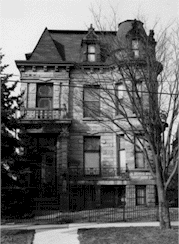
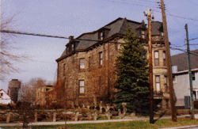

Franklin Castle -
Frequently Asked Questions
Home
History
Eras
1860 - 1913
1913 - 1968
1968 - 1974
1974 - 1984
Present
Future
FAQ's
Contact Us
Links
Note: The following questions were answered by Michelle Hiemburger, recent owner.

Can I see the inside of the house? Is the house open for tours? Can I spend the night in the house for paranormal research, a dare, curiosity, research paper, news story, etc...?
No. The house is not open to the public right now, nor is it open to anyone other than the architects and contractors and other people working on the house.
Why?
Well, there are several reasons for not having the house open at the moment, but the most important one is safety. The house is being restored right now-- there was extensive fire damage and much of it is still being repaired. There are holes in floors, loose plaster, all kinds of dangers, and we just can't allow people in the house in this state. Beyond that, I also want the house to be beautiful when the public sees it, and right now the inside of it is anything but beautiful. Please be patient, and please respect that the castle is private property. As for students, media, and paranormal researchers who want to try to experience the ghostly nature of the house by spending the night or conducting experiments, I can't say right now what I will agree to when the house is finished-- it is my home, after all, and I'm not sure how I'll feel about those things in the future. All I can tell you is that those things are not possible now, nor will they be until the work on the house is completed.
But isn't it true that you were trying to get people to spend the night because everyone is afraid of it?
No, not at all. I've had lots of people spend the night there, and many, many offers / requests that I've turned down.
Is the castle really haunted? Have you seen ghosts there?
Well, I'm not sure what I believe, if I believe in ghosts at all. I'm still waiting for proof, but I don't know what I'll do if I get it... probably not sleep for a long time! I have heard lots of strange noises in the castle, and many of my friends and family have had odd experiences there, but most of them involve either unexplained sounds, or difficult-to-describe feelings. I do know that there is something different about the castle, something magnetic. People feel drawn to it, even if they're afraid of it. People who have spent a lot of time in it tend to feel a connection to it and talk about it almost like it's a person. It seems to have a personality, in a way, but I don't think it's at all scary or threatening or evil.
Are you afraid to stay there?
Not at all. It's not a scary place...a little creepy at times-- especially in the middle of the night when your imagination is running wild-- and kind of odd. But it doesn't frighten me, and it doesn't frighten most of the people I know who have spent a lot of time there. I've been in a number of places that felt evil or scary in some intangible way, and I could never live in a place like that.
Have you spent the night alone there?
Of course-- many times. I've heard strange sounds and hoped to see something or hear something that would prove to me that ghosts exist, but so far it hasn't happened. So far it's been no spookier than sleeping alone in any old house that creaks in the wind or has rattling pipes.

Has any work been done on the house since the fire?
Yes-- the most obvious work, of course, is the fantastic new roof, which took a long time to complete, but was definitely worth the wait. The original pointy turret has been restored (it was severely damaged in a tornado in 1954, from what I've heard, and had to be removed and replaced with a less exciting flat-topped turret). And a lot more work can't be seen from the street. The architectural plans were done by the talented Robert Maschke and his firm, and the construction by the excellent Infinity Construction (links to their sites are on the links page).
Why don't you update your site anymore?
I agonized much before deciding to sell to Mr. Charles Milsaps, a Cleveland area Real Estate Investor. He has wonderful plans in store, which you can see and read about at his website
The Franklin Castle Club
. Understandably, I can't bear to drive by, much less stop in for an update. So this is the end of my relationship with the Franklin Castle and the final posting to this website...
Home
| FAQs |
Links
|
Future
|
Contact Us
|
Eras:
1860 - 1913
|
1913 - 1968
|
1968 - 1974
|
1974 - 1984
|
Present
Copyright 2004,
L
2
Solutions. All rights reserved.